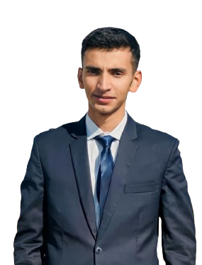
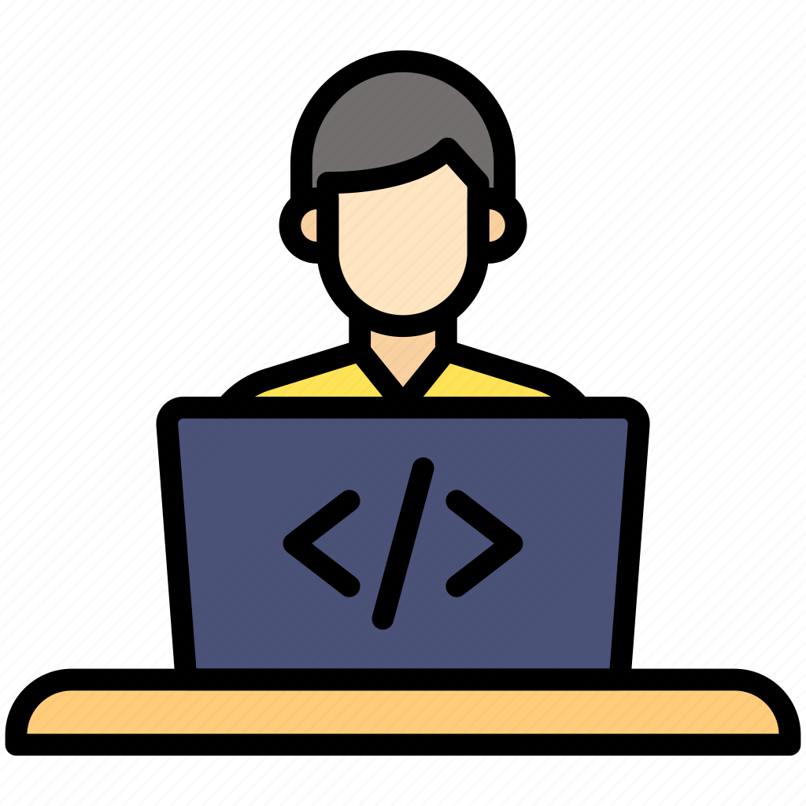

It's me Awais Iqbal
And I'm a passionate

ABOUT ME
Hi! I'm Awais Iqbal, a passionate front-end developer and designer. With a focus on building beautiful, user-friendly websites and digital experiences, I strive to create designs and code that connect with users In addition to my work as a graphic designer and web developer, I am continually learning and adapting to new technologies and trends in the industry
Work - Experience

Graphic Designer (2022-2023)
Proficient in Adobe Illustrator, I specialized in creating high-quality
logos, vector illustrations, and custom designs tailored to client needs. I utilized Illustrator
to develop visually impactful branding elements, ensuring scalability and precision for both
digital and print media.
Web Designer
(2023-2024)
(2023-2024)
Skilled in using Figma, I designed intuitive and responsive websites,
creating user-friendly interfaces and prototypes that align with client objectives. My work
focused on UI/UX design, ensuring seamless web experiences and optimizing designs for both
desktop and mobile platforms.
Frontend Developer
(continue)
(continue)
Experienced in building dynamic, responsive websites using HTML, CSS, and
JavaScript, with a strong focus on performance and user experience. Proficient in React for
developing interactive user interfaces, and Tailwind CSS for efficient, utility-first styling
that enhances development speed and consistency